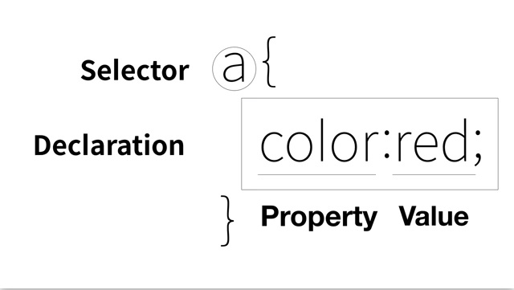

글꼴,가운데 맞춤, 글자모양, 색 욕구 상승
기존에 html에 태그를 추가하는 것이 쉬운가 언어를 새로 만드는 것이 쉬운가
>전자
한계에 부딪침(ex>html의font 태그)ㅡ> CSS의 탄생
ex>html의font 태그 : 디자인은 정보를 담지 않는데 정보를 담은 태그와 같은 줄에 있게됨
ㅡ> 디자인 태그와 정보태그가 섞이면서 굉장히 복잡하게 느껴짐
CSS는 디자인을 광범위하게 적용해줌
!-- ~ --> 이사이에 있는 내용은 출력이 안됨
웹브라우저는 기본적으로 웹페이지를 html형식으로 읽음.
따라서 html에게 css로 읽을 것을 요구하는 태그를 써야함 -> style 태그
style태그 안의 정보는 css로 읽게 됨
a - 모든 a 링크에 대해서/ {color:red;} 글꼴을 빨간색으로 만들어라
수억개의 정보를 한줄로 바꿀 수 있음. 목차여러개에 폰트태그를 다 안써도 됨,가독성 상승, 수정 쉬움, 매우 효과적
CSS사용시 style 태그안에만 디자인이 담겨있게됨.
1. style 속성쓰기 :css목차의 a링크안의 style="" 이부분은 css형식으로 적용해주라는 뜻임(이때 style은 html의 속성) style 속성 안의 ""은 css로 해석해달라는 뜻임.선택자가 필요없음.
2. style 태그 쓰기 :style태그를 쓴뒤 그 안의 내용은 {}형식으로 채움. a{}는 선택자,셀렉터라고 불림 누구에게 css효과를 줄것인가라는 뜻임 또 color:black; 은 선언 이라고 함.선택자에게 적용될 css효과를 의미
이때 color는 속성(property)이라 하고 red는 property value라고 함.
text-decoration: none; 글꼴효과 다 없애줘라는 속성
; 효과적용범위의 끝맺음을 나타내는 것.선언뒤 항상 세미콜론써주기. ;는 소괄호 ""는 중괄호 인듯

Mariya Takeuchi - Single Again (That Day, on the Beach)